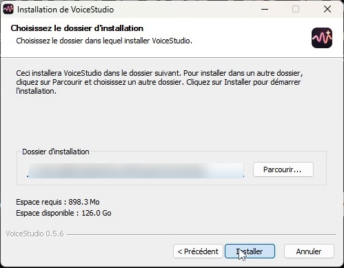
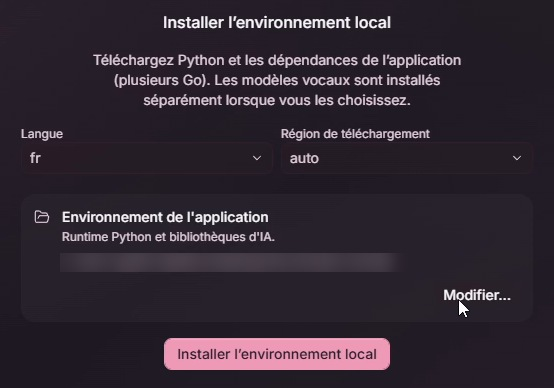
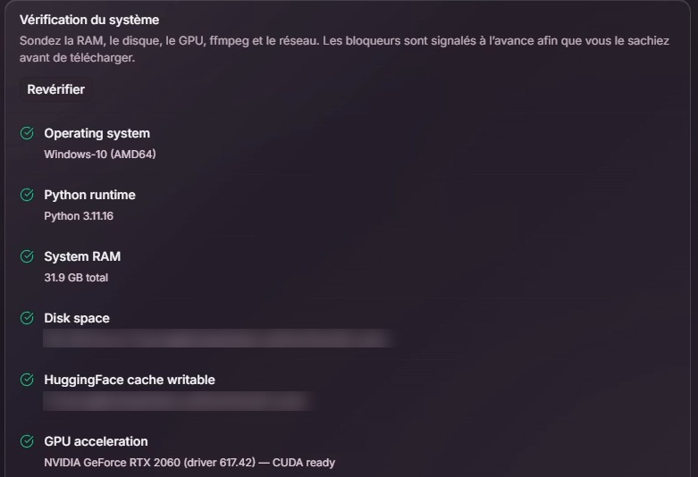
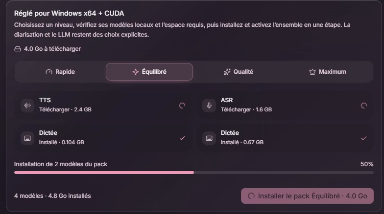
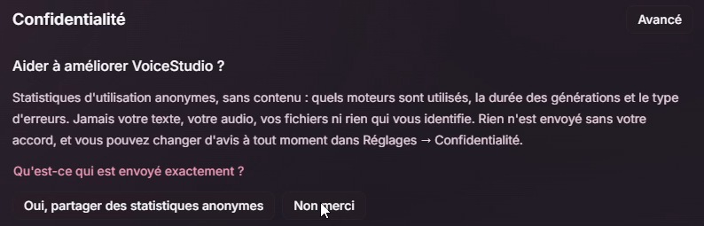
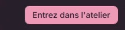
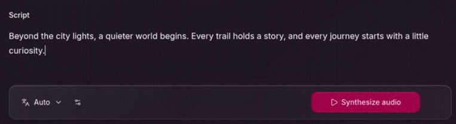

1 / 8
Avant de commencer et télécharger
Ce parcours utilise l’installeur graphique : aucune commande à saisir. Il vise Windows 10 ou 11 en 64 bits, sur un PC Intel ou AMD. Les captures montrent VoiceStudio 0.5.6 ; certains libellés peuvent évoluer.
Ce qu’il te faut
Une connexion Internet pour l’installation et les modèles. Le site indique environ 8 Go de RAM pour démarrer, 16 Go ou plus conseillés, et environ 10 Go d’espace disque. Prévois davantage si tu ajoutes plusieurs moteurs. Une carte NVIDIA compatible peut accélérer les calculs ; le CPU fonctionne aussi, plus lentement.
Télécharger l’application
Ouvre voicestudio.sh/download (nouvel onglet), sélectionne Windows, puis Download installer. Tu récupères un fichier du type VoiceStudio-Electron-…-win-x64.exe. Choisis la version stable proposée.

Le code source promis dans la vidéo est ici : github.com/debpalash/VoiceStudio (nouvel onglet). Pour installer, utilise bien le fichier .exe ; le ZIP du code source sert au développement.
Ce guide couvre Windows x64. Pour un Mac, Linux ou un PC Windows ARM, consulte les indications propres à ta machine sur la page de téléchargement.
2 / 8
Installer l’application
Le fichier .exe installe l’interface de VoiceStudio. L’environnement et les modèles seront préparés dans les étapes suivantes.
Lancer le fichier .exe
Ouvre le fichier téléchargé. Suis l’assistant, conserve le dossier proposé ou choisis-en un autre, puis clique sur Installer. À la fin, lance VoiceStudio depuis le menu Démarrer si l’application ne s’ouvre pas seule.


Conserve le dossier proposé si tu n’as pas de besoin particulier. Les chemins personnels sont masqués dans cette capture.
3 / 8
Préparer les outils locaux
Au premier lancement, VoiceStudio prépare Python et les bibliothèques nécessaires au fonctionnement des moteurs IA.
Installer l’environnement local
Choisis fr pour la langue et laisse la région de téléchargement sur auto. Vérifie le disque de destination, puis clique sur Installer l’environnement local. Laisse l’application ouverte jusqu’à la fin.


Le téléchargement peut représenter plusieurs gigaoctets. Le temps nécessaire dépend de ta connexion et du PC. Attends la fin de cette préparation avant de poursuivre l’assistant.
Python et les dépendances sont gérés par l’application. Aucun Python, Git ou outil de développement à installer manuellement pour ce parcours.
4 / 8
Laisser VoiceStudio vérifier le PC
Après l’environnement local, l’assistant contrôle notamment la mémoire, le disque, les outils audio et le périphérique de calcul.
Lire les résultats du contrôle
Attends la fin de la Vérification du système. Les éléments validés affichent une coche. Si un point bloque, lis son message et corrige-le avant de cliquer sur Revérifier. Fais défiler la liste pour voir les résultats du bas.


Si les vérifications permettent de poursuivre, clique sur Tout va bien - continuez en bas de la fenêtre pour passer aux packs de modèles.
La carte graphique est facultative
La mention CUDA ready de cette capture concerne sa carte NVIDIA. Ce n’est pas un résultat obligatoire sur tous les PC. Sans carte compatible, choisis un moteur adapté au CPU ; les générations peuvent prendre plus de temps.
Un problème de mémoire et un problème de téléchargement n’ont pas la même solution. Garde le message exact si tu dois consulter la section Dépannage et liens.
5 / 8
Installer les modèles
L’application est installée, mais les moteurs ont encore besoin de leurs fichiers de modèles pour produire ou reconnaître une voix.
Choisir un pack adapté au PC
Dans Packs de modèles, regarde les profils proposés et le volume à télécharger. Le profil Équilibré est celui retenu dans l’enregistrement sur un PC NVIDIA. Sur ta machine, suis les indications de compatibilité plutôt que de recopier ce choix automatiquement.


Clique sur Installer le pack, puis attends la fin des téléchargements. Vérifie que le modèle utile est indiqué installé ou prêt. Le bouton permettant de continuer ne suffit pas à prouver que les modèles ont fini de s’installer.
À quoi correspondent les catégories
TTS transforme du texte en voix : c’est le moteur nécessaire au premier test. ASR reconnaît la parole pour la transcrire. Les modèles de dictée ou de traduction servent à leurs fonctions respectives ; tu peux les ajouter selon tes besoins.
Retrouver les modèles plus tard
Ouvre Paramètres → Modèles dans l’interface des captures, ou Catalogue / Model Catalogue selon ta version. Télécharge le modèle voulu, puis sélectionne le moteur pour le bon usage. La langue et le clonage dépendent du moteur choisi.
6 / 8
Terminer la configuration
Il reste le choix de confidentialité, puis l’ouverture de l’atelier. La dictée peut être configurée plus tard.
Choisir les options de confidentialité
L’écran propose de partager des statistiques d’utilisation anonymes. Pour refuser cet envoi facultatif, clique sur Non merci. Tu peux aussi l’accepter ; ce choix se retrouve ensuite dans les paramètres de confidentialité.


Entrer dans l’atelier
Passe à l’étape Entrez dans l’atelier et clique sur le bouton du même nom en bas à droite. L’essai de dictée est optionnel. Avant ton premier test, laisse les téléchargements de modèles se terminer.


Pour le parcours local, aucun compte VoiceStudio ni clé API n’est nécessaire. Internet sert aux téléchargements et mises à jour ; les services distants optionnels relèvent d’autres réglages.
7 / 8
Générer une première voix
Pour vérifier l’installation sans préparer d’enregistrement, commence par une voix conçue à partir d’une courte description.


1. Ouvre Concevoir / Design, ou Voix → By design selon la version. Utilise un moteur TTS qui prend en charge la conception vocale ; si une installation est proposée, termine-la d’abord.
2. Dans la description, essaie : « Une voix adulte chaleureuse, posée, avec un débit naturel. » Dans Script, écris : « Bonjour, ceci est mon premier test avec VoiceStudio. »
3. Choisis le français, ou Auto, puis clique sur Synthesize Audio ou son équivalent français. Attends le lecteur du résultat et lance la lecture. Le premier chargement du modèle peut être plus long.
Le test est réussi si un extrait est créé et se lit. Tu peux ensuite enregistrer le profil vocal pour le retrouver.
Pour tester le clonage de ta propre voix
Choisis Voice clone / From audio. Importe 5 à 15 secondes de parole nette, avec une seule voix et sans musique. Si un champ de transcription apparaît, saisis les mots exacts de cet extrait. Écris ensuite le nouveau texte et génère-le. Utilise un moteur compatible avec le clonage.
Utilise ta propre voix ou un enregistrement pour lequel tu as l’accord de la personne.
8 / 8
Si quelque chose bloque
Commence par identifier si le problème vient du téléchargement, du modèle sélectionné ou des ressources du PC.
L’installation ou un téléchargement échoue
Vérifie la connexion, l’espace libre et le message affiché. Dans Modèles / Catalogue, utilise l’action Installer / Réparer du modèle concerné si elle est proposée. Évite de fermer l’application pendant un téléchargement.
La génération reste indisponible
Vérifie que le moteur TTS est installé, sélectionné et prêt pour la fonction choisie. Un modèle de transcription seul ne génère pas de voix. Attends aussi la fin du chargement des poids du moteur.
Le PC manque de mémoire ou va très lentement
Ferme les applications lourdes, teste une seule phrase et choisis un modèle plus léger compatible avec ton usage. Sans accélération GPU, un temps de calcul plus long est possible.
Tu as besoin d’un diagnostic
Ouvre les Journaux / Logs ou le contrôle système dans les paramètres. Selon la version : Settings → About → Run self-check. Relève l’erreur exacte, la version de l’app et le moteur choisi pour consulter l’aide officielle.
Les liens à garder
Télécharger VoiceStudio (nouvel onglet)
Le dépôt GitHub promis dans la vidéo (nouvel onglet)
Installation Windows (nouvel onglet)
Modèles et paramètres (nouvel onglet)
Dépannage officiel (nouvel onglet)
Repères vérifiés le 26 octobre 2026. Captures issues des enregistrements des 23 et 24 octobre, version 0.5.6. Les écrans de la branche main peuvent évoluer plus vite que la version installée.
Guide indépendant par Entre Deux Commits. Captures recadrées ; chemins personnels floutés. L’édition open source et les modèles ont leurs propres licences : vérifie les conditions du moteur pour tes usages.
À GARDER SOUS LA MAIN
Tu préfères le PDF ?
Retrouve les mêmes étapes dans la version illustrée à télécharger.
Télécharger le guide PDF